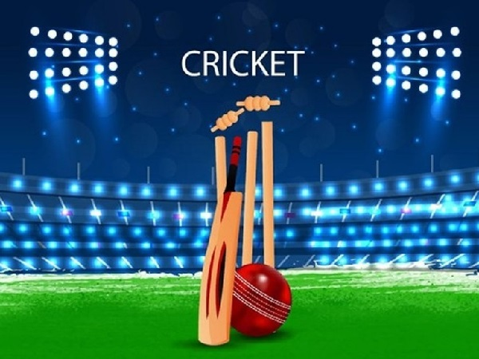

About sports
cricket

ricket is a bat-and-ball game played between two teams of eleven players on a field at the centre of which is a 22-yard (20-metre) pitch with a wicket at each end, each comprising two bails balanced on three stumps. The batting side scores runs by striking the ball bowled at one of the wickets with the bat and then running between the wickets, while the bowling and fielding side tries to prevent this (by preventing the ball from leaving the field, and getting the ball to either wicket) and dismiss each batter (so they are "out"). Means of dismissal include being bowled, when the ball hits the stumps and dislodges the bails, and by the fielding side either catching the ball after it is hit by the bat, but before it hits the ground, or hitting a wicket with the ball before a batter can cross the crease in front of the wicket. When ten batters have been dismissed, the innings ends and the teams swap roles
know more information
football
Football is a family of team sports that involve, to varying degrees, kicking a ball to score a goal. Unqualified, the word football normally means the form of football that is the most popular where the word is used. Sports commonly called football include association football (known as soccer in North America, Ireland and Australia); gridiron football (specifically American football or Canadian football); Australian rules football; rugby union and rugby league; and Gaelic football.
know more
kabaddi
Kabaddi is a contact team sport played between two teams of seven players. The objective of the game is for a single player on offense, referred to as a "raider", to run into the opposing team's half of the court, touch out as many of their players and return to their own half of the court, all without being tackled by the defenders in 30 seconds. Points are scored for each player tagged by the raider, while the opposing team earns a point for stopping the raider. Players are taken out of the game if they are touched or tackled, but are brought back in for each point scored by their team from a tag or a tackle.
know more